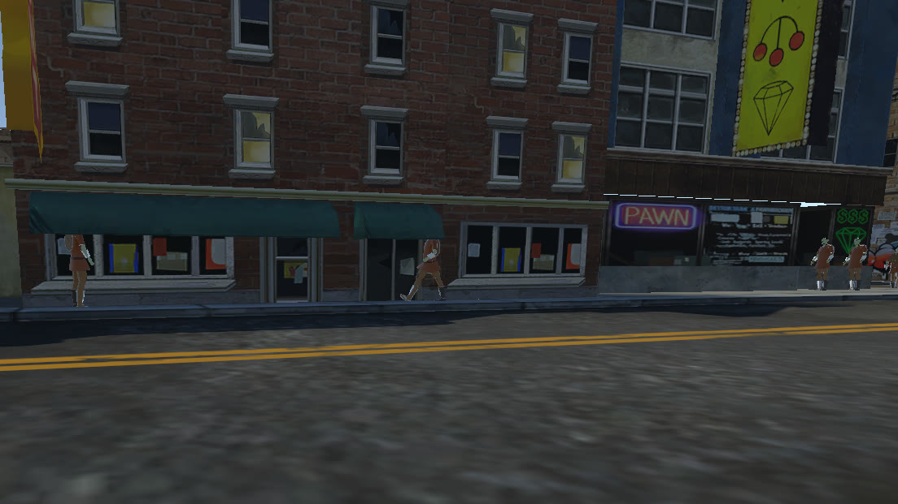
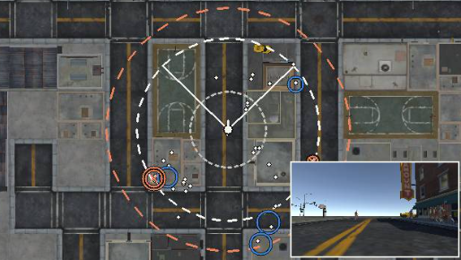
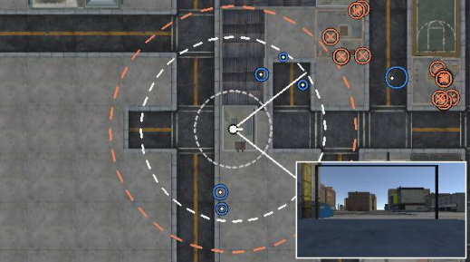
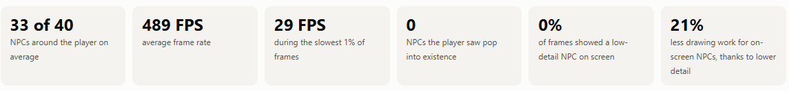
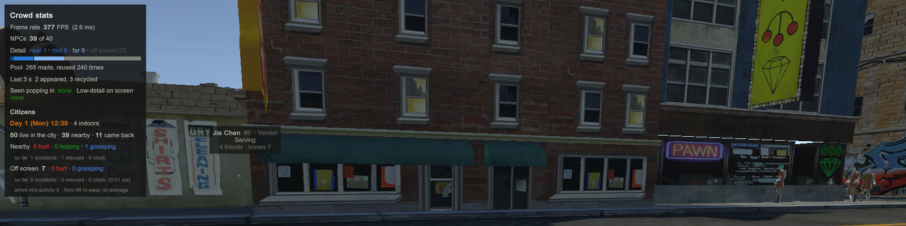

Paint the Town Red
System design · Unity 6 (URP), C# · team of two · 2026
Crowds are expensive. Every NPC in this city is a skinned model with randomised parts, its own animator and its own AI, and the usual answer to "it's too slow" is to make the art cheaper. I wanted to try the other way round: keep the art, and have the systems carry the load. This page goes through how the crowd system got there over four rounds of building and playtesting.

Starting point: pooling and detail levels
The first version had two optimisations. NPCs, including their randomised parts, were created ahead of time and kept in an object pool, so nothing had to be built while the game was running. And NPCs dropped to simpler detail levels the further they were from the camera.

Playtesting showed both were there, but not doing much:
- NPCs were taken out of the pool but never put back, so the pool barely helped.
- The map always held the maximum number of NPCs, even in places the player would never see.
- Detail only depended on distance, so an NPC standing right behind the player was still drawn at full detail.
Second pass: a bubble around the player
Instead of spreading the crowd over the whole map, I kept it in a bubble around the player. NPCs that drift too far away go back into the pool, and come out again somewhere near the player that they can't see.

I also changed how detail levels are picked. Anything off screen drops straight to the lowest level, however close it is. Anything on screen, or just about to come on screen as the camera turns, uses the distance-based levels as before.

This playtest turned up a different set of problems, mostly with the spawner:
- NPCs spawned behind the player more often than in front, so the street ahead looked empty.
- NPCs were recycled just for being off screen, even in the direction the player was walking, and new ones turned up in clumps.
- New NPCs stood still until they came into view, and only then decided where to go.

Third pass: making it feel natural
Most of the fixes here were about pacing. Gaps in the crowd now fill in gradually and at an uneven rate, rather than all at once. A new NPC won't appear close to where another one just did, so they don't arrive in groups. New NPCs pick somewhere to walk to straight away, so they come into view already on their way somewhere. And recycling is slower: NPCs stick around longer unless they are a long way from the player.
Last pass: reports for designers
By this point the system had a lot of settings, and it was hard to tell whether a change made things better. So every play session now writes a report. It starts with a row of key numbers, then a table of anything that looks off, with the setting responsible and a suggested value to try, followed by heatmaps of where NPCs spent their time and where they appeared.



You can open one of the actual reports from a play session.
Results
The build includes a benchmark that walks the same route five times, switching optimisations off one at a time. These are the numbers from the Windows build:
| Setup | Average FPS | Slowest 1% |
|---|---|---|
| Everything on | 504 | 284 |
| No detail levels | 478 | 275 |
| No simpler models | 490 | 278 |
| No object pool | 451 | 258 |
| Everything off | 452 | 265 |
That is about 11% faster on average with everything on. The scene is light (low-poly models, simple animation, 40 NPCs), so I'd expect the gap to grow in a heavier one. Just as important, nobody is ever seen spawning in.
Looking back
My original proposal only aimed at performance. Through playtesting, the project ended up helping more people than that: the reports give designers a way to check their tuning and spot outliers, the polish pass made the NPCs look more alive as well as cheaper, and comparing different ways of building randomised NPCs gave the artists a clearer idea of what they could make without it being cut back later.
Next
I'm now combining the crowd with my teammate's reputation and gossip system. Each NPC becomes a person who keeps their name, look and memories when they leave and come back, keeps living while off screen, and follows a daily routine like queuing for coffee, catching the bus or working a shop counter.
